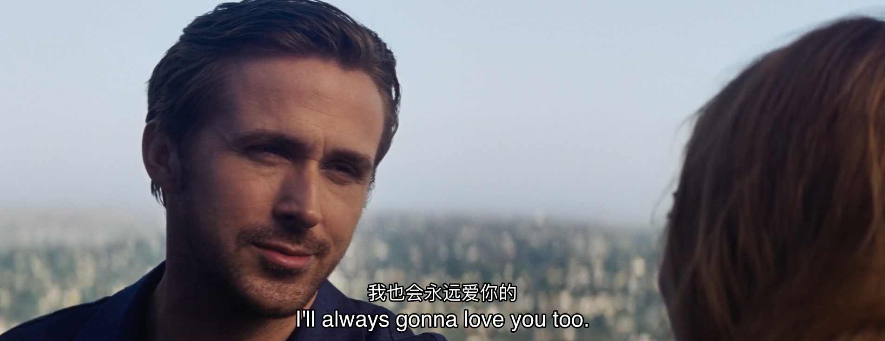

<!DOCTYPE html>
<html lang=zh>
<head><meta name="generator" content="Hexo 3.8.0">
    <!-- so meta -->
    <meta charset="utf-8">
    <meta http-equiv="X-UA-Compatible" content="IE=edge">
    <meta name="HandheldFriendly" content="True">
    <meta name="viewport" content="width=device-width, initial-scale=1, maximum-scale=1">
    <meta name="description" content="2011年，秋，第一次见到她，刚刚军训完的我被分到了软件1108班。第一天晚自习，我在讲台上演讲班干部竞选词，不知为何提起坐在台下右手边的一位女生，只记得说了句：“那位美丽的齐刘海女生”，她听后捂嘴轻笑。那年我18，她20。 后来我们成为了关系还不错的异性朋友，偶尔下课一起回寝室，偶尔晚上在QQ上聊天，偶尔听她吐槽下身边的糟心事，偶尔考试时互相抄抄对方的答案。那年我20，她22。 201">
<meta property="og:type" content="website">
<meta property="og:title" content="private">
<meta property="og:url" content="http://lxwu.me/private/index.html">
<meta property="og:site_name" content="Pissy ca-ca">
<meta property="og:description" content="2011年，秋，第一次见到她，刚刚军训完的我被分到了软件1108班。第一天晚自习，我在讲台上演讲班干部竞选词，不知为何提起坐在台下右手边的一位女生，只记得说了句：“那位美丽的齐刘海女生”，她听后捂嘴轻笑。那年我18，她20。 后来我们成为了关系还不错的异性朋友，偶尔下课一起回寝室，偶尔晚上在QQ上聊天，偶尔听她吐槽下身边的糟心事，偶尔考试时互相抄抄对方的答案。那年我20，她22。 201">
<meta property="og:locale" content="zh-CN">
<meta property="og:image" content="http://lxwu.me/private/index/love.png">
<meta property="og:updated_time" content="2018-09-14T10:12:01.769Z">
<meta name="twitter:card" content="summary">
<meta name="twitter:title" content="private">
<meta name="twitter:description" content="2011年，秋，第一次见到她，刚刚军训完的我被分到了软件1108班。第一天晚自习，我在讲台上演讲班干部竞选词，不知为何提起坐在台下右手边的一位女生，只记得说了句：“那位美丽的齐刘海女生”，她听后捂嘴轻笑。那年我18，她20。 后来我们成为了关系还不错的异性朋友，偶尔下课一起回寝室，偶尔晚上在QQ上聊天，偶尔听她吐槽下身边的糟心事，偶尔考试时互相抄抄对方的答案。那年我20，她22。 201">
<meta name="twitter:image" content="http://lxwu.me/private/index/love.png">
    
    
        
          
              <link rel="shortcut icon" href="/images/favicon.ico">
          
        
        
          
            <link rel="icon" type="image/png" href="/images/favicon-192x192.png" sizes="192x192">
          
        
        
          
            <link rel="apple-touch-icon" sizes="180x180" href="/images/apple-touch-icon.png">
          
        
    
    <!-- title -->
    <title>private</title>
    <!-- styles -->
    <link rel="stylesheet" href="/css/style.css">
    <!-- persian styles -->
    
      <link rel="stylesheet" href="/css/rtl.css">
    
    <!-- rss -->
    
    
</head>

<body class="max-width mx-auto px3 ltr">
    
    <div class="content index py4">
        
          <header id="header">
  <a href="/">
  
    
      <div id="logo" style="background-image: url(/images/logo.png);"></div>
    
  
    <div id="title">
      <h1>Pissy ca-ca</h1>
    </div>
  </a>
  <div id="nav">
    <ul>
      <li class="icon">
        <a href="#"><i class="fas fa-bars fa-2x"></i></a>
      </li>
       
        <li><a href="/">首页</a></li>
       
        <li><a href="/moments/">时刻</a></li>
       
        <li><a href="/about/">关于</a></li>
       
        <li><a href="/archives/">归档</a></li>
       
        <li><a href="/friends/">好友</a></li>
       
        <li><a href="/atom.xml">RSS</a></li>
      
    </ul>
  </div>
</header>

        
        <article class="post" itemscope="" itemtype="http://schema.org/BlogPosting">
  

  <div class="content" itemprop="articleBody">
      
          <p>2011年，秋，第一次见到她，刚刚军训完的我被分到了软件1108班。第一天晚自习，我在讲台上演讲班干部竞选词，不知为何提起坐在台下右手边的一位女生，只记得说了句：“那位美丽的齐刘海女生”，她听后捂嘴轻笑。那年我18，她20。</p>
<p>后来我们成为了关系还不错的异性朋友，偶尔下课一起回寝室，偶尔晚上在QQ上聊天，偶尔听她吐槽下身边的糟心事，偶尔考试时互相抄抄对方的答案。那年我20，她22。</p>
<p>2013年，秋，我幸运拿到某家移动互联网公司的实习offer，正式开始了大学实习生活。在公司时的压力比在学校时大得多，几乎天天十点后下班，还好公司离学校寝室近，步行15分钟的路程。还记得快到2014年农历新年的时候，整个学校的学生几乎都走光了，每晚在寝室里睡觉时寂静的可怕，毫不夸张的说能听见自己心脏的跳动声音，还好熬过了这段苦逼的时光。新年后开学了，学校寝室陆陆续续住人进来，学校又恢复了生机。这段时间我谈过一个女朋友，是一个公司做运营的同事，时间不长，也算排挤下寂寞的时间。那年她好像和我失联了，可能是因为在她老家实习的缘故吧。</p>
<p>2014年，夏，我结束了实习生活，正式在另一家公司上班了，从学校搬出来后，也算正式告别了大学生活。虽然告别了大学生活，但是我和她之间好像并没有告别，不知怎的聊天越来越频繁。一直到9月份左右，我老家里有个亲戚结婚，我就跟她商量着十一假期要不要一起去旅行，弥补毕业旅行泡汤的遗憾（曾计划几个关系不错的同学来一场毕业旅行），她欣然答应了。</p>
<p>9月30日晚上我们拖着各自的行李箱出发了，我坐硬卧从武汉出发，她坐硬卧从北京出发，10月1日早上我先到达的杭州，在永和大王点了早餐，一边吃一边等她汇合。过了一会她拖个紫色的行李箱找到了我，看起来好像有点尴尬，也许是第一次和男生出门旅游吧，而我又何尝不是呢？那天白天我们绕西湖走了一圈，中午就回酒店休息了，晚上又回西湖吃饭坐游船。在小木船上看断桥夜景格外美，最后靠船上岸时船夫对我说了句：“把你女朋友牵一下。”我和她相视，尴尬的笑了笑，但是我们都没有对船夫说穿。</p>
<p>第二天我们出发去我妈老家余姚，参加一个姐姐的婚礼。婚宴在中午，她表示不太好意思参加婚礼，我想想也是，就跟家里人明确表示了我俩的关系（只是普通同学），可是家里人很热情都要她来参加，表示只是吃个饭蹭蹭喜气。婚宴上我们坐的是最前面的主桌，她一直在默默吃饭，可能是周围都是陌生人比较害羞，也可能是我亲戚很好奇她的身份目光都聚焦在她身上。所以婚宴结束我们匆匆走了，赶往下一个旅行目的地，也是真正地踏上了“我们”的旅程。</p>
<p>第三天和第四天我们都在舟山游玩，第三天去普陀山的行程结束后，我们在下船的码头附近吃完晚饭准备回酒店休息，那时候没有滴滴打车，所以只能在路边拦出租车，那天晚上回舟山大岛的车一辆接一辆排着队开，而往酒店方向的路只有寥寥几辆经过，印象中我们在路边迎着海边吹来的凉风等了好久，当时还开玩笑说如果没等到车只能睡路边了。后来终于有辆黑车顺路接了我们，我们到达酒店后就收拾各自的行李、洗漱。那个酒店是名宿别墅群其中的一栋，我们那间房是在顶楼三楼（因为十一期间酒店都很贵，我们出来前就商量着住标间），其中一张床对着的天花板有一半是透明的天窗，于是我就主动让她睡有天窗的床，而我睡另外一张。不知怎的，本来计划着第二天早起一起去海边看日出，而我们那晚毫无睡意，躺在各自床上聊天。突然她叫到天窗外的星星很美，我在征求了她的许可后，去她床上躺在她身边和她一边欣赏天窗外的星星一边聊天，确实，那是我一辈子以来看过最美的星星，每一个又亮又闪，感觉离地面很近，像粘在天花板上一样，伸手可得。都说人的大脑受两种系统控制，而我那晚感性战胜了理性，心里只有一个声音告诉我，此时不亲她会后悔一辈子。于是我轻轻的把嘴凑到她脸上Kiss了她，幸运的是她没有拒绝我。</p>
<p>第四天我们醒来后，太阳已经快升到顶上了。我们去海边玩了下水就和这个美好的地方告别，出发去下个目的地淳安千岛湖。返程的大巴上我们互相靠着休憩，一人戴一只耳机听同一首歌，车上空调太冷就穿上我的外套，一切行为都像一对谈过很久的情侣。第五天我们到达千岛湖后，好像也没怎么出门，只是下午的时候在湖里洗了脚玩了水互相嬉戏了一番。时间过的很快，第六天下午我们就返程去上海，因为国庆最后一天假我们就要回各自的城市开始异地恋的生活。</p>
<p>第七天，我们拖着各自的行李箱来到上海虹桥，整个早上她没怎么说话，我以为她没休息好也没在意。我的车次比她早一些，就在我快要检票时，她突然止不住的开始落泪，我开始慌了，就不停的用手抹她眼泪安慰她。说话间，开始检票进站了，我和她简短告别后，径直地往里走没有回头。人呐，一旦决定了告别，就得表现的坚定一些。那天我第一次感觉到了身上背负的责任，我不知道未来我扛不扛得住。那年我21，她23。</p>
<p>十一假期过后，我们又和以前一样每天用微信联络，不一样的是聊天的内容更亲昵，文字表达不了的感情就用视频语音替代。如果还替代不了，那就飞过去看她吧。2014年立冬，原本晚上10:40就降落的飞机，由于北京APEC会议航空管制延误到23:30多才落地。飞机一落地就奔向接机口，我一眼就望见了她，她也正好看见了我，穿着白色长羽绒服向我招手。北京很冷，我很冷，搂着她我慢慢温暖起来。整个周末在北京也没去热闹的地方逛逛，只想跟她窝在一起。周日晚上我要启程回武汉了，她也要回她家乡滦平，我们就在北京西站互相告别，相似的场景再一次重演。之后有个周末又去过一次北京，真实目的是去滦平拜访她的家人，那个周日经历了第三次分别与前两次还是那么相似，不同的是这次是我让她先走，目送她离开。感觉第三次分别后，我们之间会偶尔出现意见不合的情况，主要原因还是她家人希望她尽早踏出婚姻的殿堂，而我总感觉承担不起这份责任。</p>
<p>2015年农历新年后，我已经渐渐感受到疲惫正在腐蚀我年轻的心，促使我做出了一些不成熟的选择。我开始沉迷于游戏，印象中最不成熟的事是用电脑接视频的同时还在用手机打游戏，又或者用手机打语音的同时切到游戏里。这样的行为加剧了她内心的失望，她在某一天下午跟我提出了分手。那天是工作日，我收到消息的一瞬间就懵了，过了一会假装肚子不舒服躲在公司洗手间里，最后我就回复了一个字好。可能是她心太软，微信立马开始跟我无限发消息说是一时头脑发热发的消息，我没回；下班了开始无限给我打电活、视频、语音，我没接；甚至还跟我家里人打电话，电话通了后她反而不知道说什么哭着挂断了电话。和火车站离别是多么的相似，我一旦决定了告别，就头也不回，而她永远是最伤心的一方。</p>
<p>分手后的大半年时间，我们各自都逐渐平静下来，也见过几次面。我曾经在最后一次见面之前下决心找她复合，可是当面却少了那年在朱家尖名宿里初吻她时的坚定。不成熟的男生可能都是这样吧，在女生最需要他的时候却表现的无比懦弱。最后一次见面是约在济南，快分别的时候她见我毫无复合的举动，扇了我几耳光。我当时并没有理解这几耳光背后的含义，年轻气盛的我回武汉就拉黑了她，后来就再也没有见面。那年我22，她24。</p>
<p>男生总有一天会长大，但必须得经历些什么。2017年，我经历了大半年不拿工资的困境，于是从9月份开始静下心来看书。当你觉得生活快要把你折磨完时，恰恰是刚开始。2018年1月份，武汉下着我记事以来从没经历过的暴雪，27号上午正在住院的外婆突然开始抢救，我妈打电话通知我赶紧去医院，并再三嘱咐我不要开车。而我不听，那天路上的积雪差不多5、6厘米厚，我一路踩着油门轮胎发出呜呜空转打滑的声音，路上已经不记得超了多少辆车，中午1点终于赶到了医院，可是我再也没有见过外婆睁过眼来。过了两天送葬的路上我爸也意外摔断了右大腿髋关节，本来应该我爸妈一起回老家给外婆送葬，我爸只得留在武汉住院准备手术换关节。住院的这段时间我只能公司医院两头跑，也正是这段经历，让我真真切切感受了如何去背负责任。</p>
<p>我爸手术很成功，2018农历新年后，就把他接回到家里休养。当时我妈还在老家按习俗处理外婆的白喜事，于是初中后就没怎么做过饭的我又要承担起给我爸做饭的任务。因为术后要吃高蛋白食物，所以每天最头疼的就是做什么吃。可能就是这一个月左右的经历影响了我，现在每周有空就回爸妈家给他们做几个好吃的菜，做过糖醋排骨、椒盐基围虾、香辣花甲、凉拌鸡爪、可乐鸡翅，甚至连武汉油焖大虾也会做了，我和我妈开玩笑说可能我以后多了一个厨师的新技能。</p>
<p>我人生处世观的改变，不仅仅是受这几场特殊经历的影响，看过的书对我的影响同样也很大。自2017年9月份来，我已经看了30多本书不同类型的书籍，其中认知心理学和叔本华哲学让我醍醐灌顶，不敢说大彻大悟，至少让我这个活过两个本命年的人深受启发。渐渐地，我少了一些功利主义的追求，多了一些自身与精神层次方面的投资。现在的生活很简单了，每天除工作之外的生活就是看看书、听听歌、看看电影，偶尔下下厨、喝喝酒、看看世界。</p>
<p>原本以为我可以这样平静的生活着，直到看到了她的婚礼邀请函。那一刻就像电影里的剧情一样，思绪瞬间被拉回到7年前的那间教室里，大脑开始播放着7年来我们之间经历过的各种情节。人毕竟还是动物，无论受过多少训练，无论拥有多坚定的内心，在某一刻，内心最深处的那种最原始的意欲总会释放出来。今年我25，她27。</p>
<p>明天她就要结婚了，我在微博给她发了祝福私信，祝福只有四个字：“新婚快乐”，但是我觉得这四个字一点也不够，我希望她不只是“新婚快乐”。我希望她每天不要操太多心，希望她每天都吃好穿好睡好，希望每个节日都有属于她的礼物，希望她的家庭和睦相处，希望她和她的家人都健健康康，最重要的是：希望她丈夫比我更爱她，并能爱她一辈子。</p>
<p>从明天开始我们可能要真正成为最像亲人的陌生人，但是我希望我们能像《爱乐之城》的结局一样：“如果哪一天我们偶然相见，请让我们相视一笑，什么都不用说，你懂得就够了。”如果我们遇不见也没关系，我会偶尔去重走那些我们走过的地方：朱家尖、千岛湖、北京西站等等。选择忘记一个人不如选择在心里为彼此留一块小小的位置，偶尔回忆起来也很美好。此刻，我想对她说一句上次分别时没来得及说出口的话：</p>
<blockquote>
<p>I’ll always gonna love you.</p>
</blockquote>
<p></p>
<p>完。</p>
<p>lxwu发于2018年9月14日</p>

        
  </div>
</article>

        
        <footer id="footer">
  <div class="footer-left">
    Copyright &copy; 2019 lxwu
  </div>
  <div class="footer-right">
    <nav>
      <ul>
         
          <li><a href="/">首页</a></li>
         
          <li><a href="/moments/">时刻</a></li>
         
          <li><a href="/about/">关于</a></li>
         
          <li><a href="/archives/">归档</a></li>
         
          <li><a href="/friends/">好友</a></li>
         
          <li><a href="/atom.xml">RSS</a></li>
        
      </ul>
    </nav>
  </div>
</footer>

    </div>
</body>
</html>
<!-- styles -->
<link rel="stylesheet" href="/lib/font-awesome/css/all.min.css">
<link rel="stylesheet" href="/lib/justified-gallery/css/justifiedGallery.min.css">

<!-- jquery -->
<script src="/lib/jquery/jquery.min.js"></script>
<script src="/lib/justified-gallery/js/jquery.justifiedGallery.min.js"></script>
<script src="/js/main.js"></script>
<!-- search -->

<!-- Google Analytics -->

    <script type="text/javascript">
        (function(i,s,o,g,r,a,m) {i['GoogleAnalyticsObject']=r;i[r]=i[r]||function() {
        (i[r].q=i[r].q||[]).push(arguments)},i[r].l=1*new Date();a=s.createElement(o),
        m=s.getElementsByTagName(o)[0];a.async=1;a.src=g;m.parentNode.insertBefore(a,m)
        })(window,document,'script','//www.google-analytics.com/analytics.js','ga');
        ga('create', 'UA-107755754-1', 'auto');
        ga('send', 'pageview');
    </script>

<!-- Baidu Analytics -->

<!-- Disqus Comments -->


